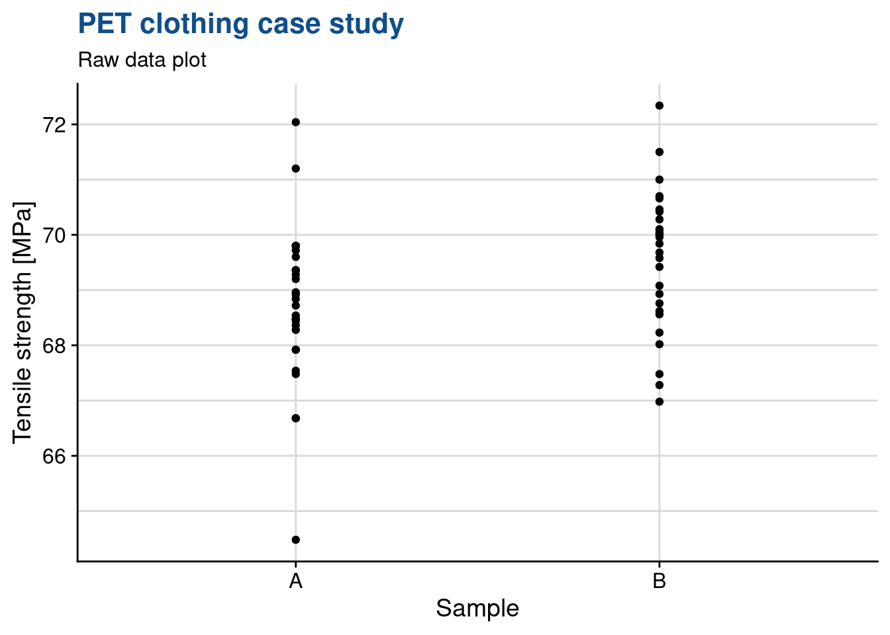
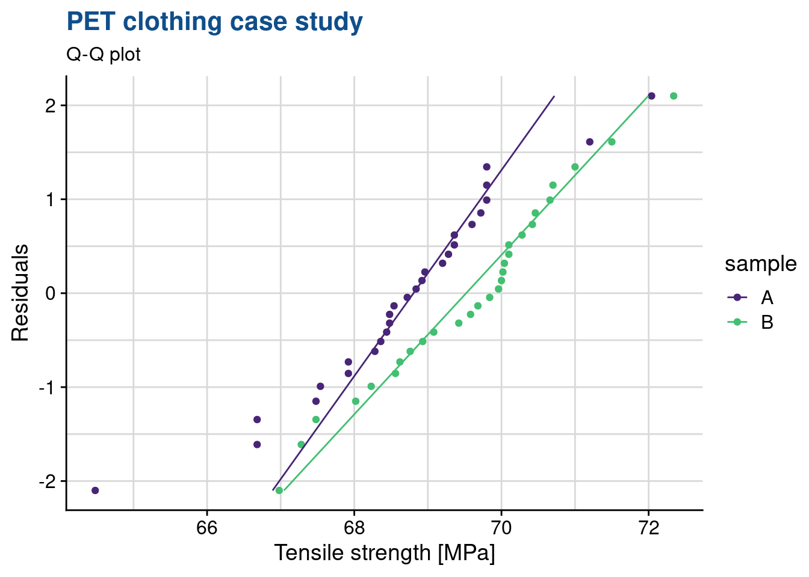

One factor two levels
Two means comparison
t-test one sample
Comparing mean to specification
An engineer working the winter sports clothing industry has established a contract for PET textile raw material supply based on the following specification: the average tensile strength has to be greater than 69.0 \(Mpa\) for each delivery. In the contract is also specified that the test protocol which is based on a 30 samples.
Figure 1: PET tensile test

A first delivery is submited and the customer wants to know if the lot average tensile strength exceeds the agreed level and if so, she wants to accept the lot.
We start by loading the first packages we will need:
library(tidyverse)
library(readxl)
library(stats)
filter <- dplyr::filter
select <- dplyr::selectlibrary(industRial)
pet_delivery <- industRial::pet_deliveryThe Quality Control department specialist at the reception starts by calcultating the average, a first criteria to reject the batch:
mean(pet_delivery$strength)[1] 68.46429The average is itself below the spec and the engineer could reject the batch right away. She decides nevertheless to observe the variability and for this she decides to plot the raw data on an histogram. An histogram is a very common plot showing counts for selected intervals.
pet_delivery %>%
ggplot(aes(x = strength)) +
geom_histogram(fill = "cadetblue",
color = "grey20") +
theme_light() +
# scale_x_continuous(breaks = seq(62, 74, 0.5)) +
theme(legend.position = "none") +
labs(title = "PET clothing case study",
subtitle = "Raw data plot",
x = "Treatment",
y = "Tensile strength [MPa]")
The mean is just slightly below the specification for acceptance and she also observes a certain variability in the batch. She decides then to perform a t-test to assess if the average calculated can be really be considered statistically smaller than the target value:
t.test(x = pet_delivery$strength, mu = 69, alternative = "less")
One Sample t-test
data: pet_delivery$strength
t = -1.5906, df = 27, p-value = 0.06167
alternative hypothesis: true mean is less than 69
95 percent confidence interval:
-Inf 69.03795
sample estimates:
mean of x
68.46429 The basic assumption of the test is that the means are equal and the alternative hypothesis is that the sample mean is smaller than the spec. The confidence interval selected is 95%. The test gives her a p value of 6.2 % above the 5% threshold she had defined. The test confirms thus that she cannot exclude the basic assumption (the null hypotheses) and thus she cannot conclude that the sample mean is smaller.
t-test two samples
Comparing means
In order to avoid similar situations in the future the development engineer considers a new chemical compositions of cement that potentially increases the levels of strenght.
Data loading
cement <- read_csv("../industRial/data-raw/2_cement.csv")
cement_long <- cement %>%
pivot_longer(
cols = everything(), names_to = "treatment", values_to = "y"
)Raw data plot
In data analysis it is good practice to start by plotting the raw data and have a first open look at what the first plots tell us.
cement_long %>%
ggplot(aes(x = treatment, y = y, fill = treatment)) +
geom_point() +
theme_light() +
theme(legend.position = "none") +
labs(title = "Cement mortar case study",
subtitle = "Raw data plot",
x = "Treatment",
y = "Bond strength")
Another way to better understanding the bond distributions is to plot a box plot. This type of plot is somehow like the histogram seen before but more compact when several groups are required to be plotted.
cement_long %>%
ggplot(aes(x = treatment, y = y, fill = treatment)) +
geom_boxplot(width = 0.3) +
theme_light() +
theme(legend.position = "none") +
labs(title = "Cement mortar case study",
subtitle = "Raw data plot",
x = "Treatment",
y = "Bond strength")
We would like to understand if the treatment has an effect. Thus we want to compare the two population means. For that we use a t test using samples obtained independently and randomly. Before running the test we also have to check the normality of the samples distributions and equality of their variances.
To do these checks we’re using the stat_qq functions from the ggplot package and plotting the qq plots for both levels in the same plot:
cement_long %>%
ggplot(aes(sample = y, color = treatment)) +
geom_qq() +
geom_qq_line() +
coord_flip() +
theme_light() +
labs(title = "Cement mortar case study",
subtitle = "Raw data plot",
x = "Treatment",
y = "Bond strength")
We observe that for both levels of treatment the data is adhering to the straight line thus we can assume they follow a normal distribution. Also both lines in the qq plot before have equivalent slopes indicating that the assumption of variances is a reasonable one. These verifications are summary ones. We review in subsequent sessions other deeper verifications of such as the shapiro-wilk normality test.
We’re now going to apply the t-test:
library(stats)t.test(y ~ treatment, data = cement_long, var.equal = TRUE)
Two Sample t-test
data: y by treatment
t = -2.1869, df = 18, p-value = 0.0422
alternative hypothesis: true difference in means is not equal to 0
95 percent confidence interval:
-0.54507339 -0.01092661
sample estimates:
mean in group Modified mean in group Unmodified
16.764 17.042 We see that p < 0.05 thus the means differ significantly. Furthemore the mean difference is estimated with 95% confidence, to be between -0.55 and -0.01 (to be noted that zero is obviously not included in this interval). There is an effect in our treatment that explains the difference in means between the two samples.
t-test two samples paired
hardness <- read_csv("../industRial/data-raw/2_hardness.csv")
t.test(x = hardness$Tip1, y = hardness$Tip2, paired = TRUE)
Paired t-test
data: hardness$Tip1 and hardness$Tip2
t = -0.26414, df = 9, p-value = 0.7976
alternative hypothesis: true difference in means is not equal to 0
95 percent confidence interval:
-0.9564389 0.7564389
sample estimates:
mean of the differences
-0.1 p > 0.05 thus the means cannot be considered different (we cannot reject the null hypothesis) The mean difference is with 95% confidence between -0.96 and 0.76.
Note that because it is paired although there are 20 measurements there are only 9 degrees of freedom (10 times the differences between the measurements, minus 1).
Randomization of the test sequence is a required practice, not only because of operator effects but also due to other potentially unknown effects like machine warm up.
Two variances comparison
Bonett’s test is accurate for any continuous distribution and does not require that the data are normal. Bonett’s test is usually more reliable than Levene’s test.
Levene’s test is also accurate with any continuous distribution. For extremely skewed and heavy tailed distributions, Levene’s method tends to be more reliable than Bonett’s method.
The F-test is accurate only for normally distributed data. Any small deviation from normality can cause the F-test to be inaccurate, even with large samples. However, if the data conform well to the normal distribution, then the F-test is usually more powerful than either Bonett’s test or Levene’s test.
Bonett’s test
Levene test
Homogeneity of variances test
You want test samples to see for homogeneity of variance (homoscedasticity)
Data loading
cement <- read_csv("../industRial/data-raw/2_cement.csv")
cement_long <- cement %>%
pivot_longer(
cols = everything(), names_to = "treatment", values_to = "y"
)library(car)leveneTest(y ~ treatment, data = cement_long)Levene's Test for Homogeneity of Variance (center = median)
Df F value Pr(>F)
group 1 1.9528 0.1793
18 Pr > 0.05 thus there is homogeneity of the variances (they do not differ significantly).
F-test
We’re now confirming this with a variance test from the stats package.
var.test(y ~ treatment, cement_long)
F test to compare two variances
data: y by treatment
F = 1.6293, num df = 9, denom df = 9, p-value = 0.4785
alternative hypothesis: true ratio of variances is not equal to 1
95 percent confidence interval:
0.4046845 6.5593806
sample estimates:
ratio of variances
1.629257 The test null hypothesis is that the variances are equal. Since the p value is much greater than 0.05 we cannot reject the null hypotheses meaning that we can consider them equal.
In other words the probability that the variances are different is 47.85% due to random cause.
Sample size
Data loading
cement <- read_csv("../industRial/data-raw/2_cement.csv")
cement_long <- cement %>%
pivot_longer(
cols = everything(), names_to = "treatment", values_to = "y"
)# Calculate the required sample size for a certain t-test power
cohen_d <- 0.27 / 0.25 # Cohen's effect size = difference of means / sd
# A Cohen's d of 2 means that the averages changed by 2 standard deviations, which is very large.
power.t.test(d = cohen_d, power = 0.95)
Two-sample t test power calculation
n = 23.28802
delta = 1.08
sd = 1
sig.level = 0.05
power = 0.95
alternative = two.sided
NOTE: n is number in *each* grouplibrary(lsr)# By comparison, calculate Cohen's d for the dataset
cohensD(x = cement$Modified, y = cement$Unmodified)[1] 0.9780006In this example if we wanted to detect a significant difference of at least 0.25 in the means with a probability of at least 95% (Power of 0.95) we would need to use 8 (7.6) samples of each (to be)